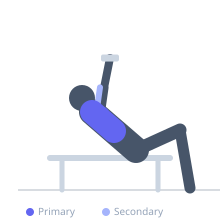
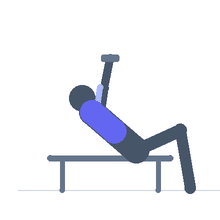

Exercise guide / Prone Incline T-Bar Rear Delt Row
Prone Incline T-Bar Rear Delt Row
The prone incline T-bar rear delt row lies the torso on an incline bench with the elbows flared wide to target the rear deltoids and upper trapezius rather than the lats. With the arms abducting laterally and elbows elevated, the movement resembles a horizontal reverse fly performed with the T-bar's fixed line of pull, creating a unique combination of stability and load not achievable with dumbbells.
Primary muscles
deltoid posterior
trapezius middle
Secondary muscles
rhomboid major
biceps brachii
Equipment
T-Bar Row
Dumbbell (Fixed)


Starting position
- Position an incline bench (30-45 degrees) over the T-bar. Lie prone with chest supported. Grip the bar or handle with both hands, arms extended below.
Setup
- Use a wide grip or the bar itself without a handle. The elbows must be able to flare to 90 degrees from the torso.
Steps
- Step 1: Begin with arms extended, gripping the bar wide.
- Step 2: Row by driving elbows out laterally and upward — not back.
- Step 3: At peak contraction, upper arms should be approximately horizontal.
- Step 4: Hold 1 second.
- Step 5: Lower under control to full arm extension.
Coaching cues
- Lead with the elbows — not the hands
- Think of opening the elbows like wings
- Pinkies up at the top of the movement
Breathing
- Exhale on the pull. Inhale descending.
Range of motion
- Full arm extension to arms horizontal with elbows at shoulder height.
Tempo
- 2-1-3-0
Common mistakes
- Elbows tracking backward instead of outward — this shifts to lat engagement
- Using too much load — the rear delt is a small muscle; use lighter weights
Safety
- Light loads only for this variation — rear delts are injury-prone under excessive load
- Keep the neck neutral — do not crane upward
Training
- hypertrophy: 12–20 reps
- hypertrophy: 3–4 sets
- Rest: {'hypertrophy': 90}